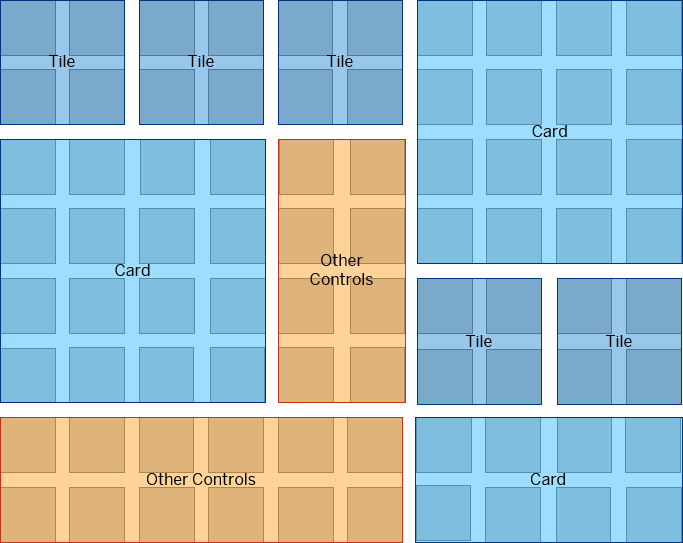

GridContainer allows you to align tiles, cards or other controls
in configuration, such as an overview page.The GridContainer allows the positioning of items (Tiles, Cards, or
others) in a two-dimensional mesh. The mesh consists of rows with the same height
and columns with the same width. Those height and width sizes along with the gap
size are configurable.

The control provides responsiveness and automatically aligns the items depending on the available space.
In contrast to the sap.ui.layout.cssgrid.CSSGrid, the
GridContainer allows the rows per item to be
automatically increased, if the item does not fit and is cut off.
The GridContainer provides control over the behavior of
the items if they are smaller in height than the given space. For
example, if an item has a width of 4 rows, but its height is only 3.5
rows, then the item could either remain 3.5 rows or stretch to 4 rows.
This behavior can be controlled through the snapToRow
property.
The GridContainer also supports layout breakpoints based on the
screen size. As a result, on smaller screens, the gaps, rows, and columns can be
smaller. You can configure them through different
GridContainerSettings for the different layouts.